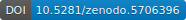
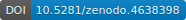
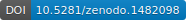

Citing Matplotlib#
If Matplotlib contributes to a project that leads to a scientific publication, please acknowledge this fact by citing J. D. Hunter, "Matplotlib: A 2D Graphics Environment", Computing in Science & Engineering, vol. 9, no. 3, pp. 90-95, 2007.
@Article{Hunter:2007,
Author = {Hunter, J. D.},
Title = {Matplotlib: A 2D graphics environment},
Journal = {Computing in Science \& Engineering},
Volume = {9},
Number = {3},
Pages = {90--95},
abstract = {Matplotlib is a 2D graphics package used for Python for
application development, interactive scripting, and publication-quality
image generation across user interfaces and operating systems.},
publisher = {IEEE COMPUTER SOC},
doi = {10.1109/MCSE.2007.55},
year = 2007
}
DOIs#
The following DOI represents all Matplotlib versions. Please select a more specific DOI from the list below, referring to the version used for your publication.
By version#
- v3.8.0
- v3.7.3
- v3.7.2
- v3.7.1
- v3.7.0
- v3.6.3
- v3.6.2
- v3.6.1
- v3.6.0
- v3.5.3
- v3.5.2
- v3.5.1
- v3.5.0
- 
- v3.4.3
- v3.4.2
- v3.4.1
- v3.4.0
- 
- v3.3.4
- v3.3.3
- v3.3.2
- v3.3.1
- v3.3.0
- v3.2.2
- v3.2.1
- v3.2.0
- v3.1.3
- v3.1.2
- v3.1.1
- v3.1.0
- v3.0.3
- v3.0.2
- v3.0.1
- 
- v2.2.5
- v3.0.0
- v2.2.4
- v2.2.3
- v2.2.2
- v2.2.1
- v2.2.0
- v2.1.2
- v2.1.1
- v2.1.0
- v2.0.2
- v2.0.1
- v2.0.0
- v1.5.3
- v1.5.2
- v1.5.1
- v1.5.0
- v1.4.3
- v1.4.2
- v1.4.1
- v1.4.0